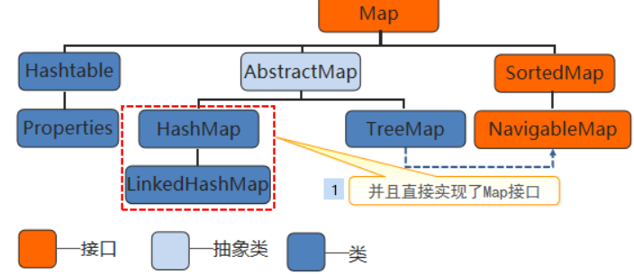
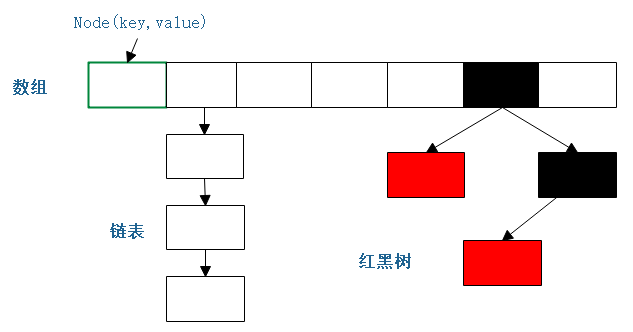
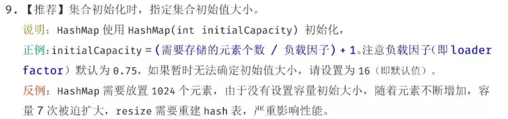

1.前言
看完咕泡Jack前辈的有关hashMap的视频（非宣传，jack自带1.5倍嘴速，高效），收益良多，所以记录一下学习到的东西。
2.基础用法

源码的注释首先就介绍了哈希表是基于Map接口，所以它的用法和其他集合的用法差不多。
/**
* Hash table based implementation of the <tt>Map</tt> interface. This * 哈希表的实现基于<tt>Map</ tt>接口。
* implementation provides all of the optional map operations, and permits * 此实现提供所有可选的映射操作，
* <tt>null</tt> values and the <tt>null</tt> key. (The <tt>HashMap</tt> * 并允许<tt> null </ tt>值和<tt> null </ tt>键。
* class is roughly equivalent to <tt>Hashtable</tt>, except that it is * （<tt> HashMap </ tt>类与<tt> Hashtable </ tt>大致等效，
* unsynchronized and permits nulls.) This class makes no guarantees as to * 除了它是不同步的，并且允许为null。） ， 此类不保证映射的顺序。
* the order of the map; in particular, it does not guarantee that the order * 特别是不能保证订单将随着时间的推移保持不变。
* will remain constant over time.对应的源码，如图所示，它继承了抽象Map类，实现了Map接口：
public class HashMap<K,V> extends AbstractMap<K,V> implements Map<K,V>, Cloneable, Serializable { ... }
至于具体咋用，不多介绍，推一个链接，HashMap的基础用法：https://blog.csdn.net/lzx_cherry/article/details/98947819
3.存储方式
下面就是介绍一个HashMap完成put(key, value)操作之后的存储流程。
（1）HashMap key、value被put后的存储方式：
在JDK1.7及其之前都是用的 数组+链表 的方式，JDK1.8之后存储方式优化成了 数组+链表+红黑树 的方式。
（JDK1.8后，如果单链表存储的长度大于8则转换为红黑树存储，采用这样的改善有利于解决hash冲突中链表过长引发的性能下降问题）
（2）图解HashMap的主要数据结构：

<1>存储单元 Node
图中的每一个格子代表每一个Node对象。Node的信息主要包含它的存储位置，key，value，如果在链表中则会有下一个Node的信息，如果存储在红黑树中则包含红黑树的相关信息。
由上面我们可以写出Node数据结构的伪代码：
Node[] table; 数组
class Node{ Node next; } 链表
TreeNode(left, right, parent, boolean flag = red| black) 红黑树
而HashMap源码中Node的代码和上面伪代码的一致：
/**
* Basic hash bin node, used for most entries. (See below for
* TreeNode subclass, and in LinkedHashMap for its Entry subclass.)
*/
static class Node<K,V> implements Map.Entry<K,V> {
//通过hash算法得出的存储位置
final int hash;
//key
final K key;
//value
V value;
//链表的下个Node
Node<K,V> next;
...
}HashMap源码中TreeMap的代码(建议之前先了解红黑树的原理)：
static final class TreeNode<K,V> extends LinkedHashMap.Entry<K,V> {
TreeNode<K,V> parent; // red-black tree links
TreeNode<K,V> left;
TreeNode<K,V> right;
TreeNode<K,V> prev; // needed to unlink next upon deletion
boolean red;
... } <2>存储过程
根据HashMap的数据结构，可以大致推断出它的存储过程。
a.先创建一个数组
b.计算出存储key value的Node的位置
c.如果hash冲突了，判断冲突数目的长度决定使用链表还是红黑树结构
d.数组不够需要进行扩容
下面对存储过程进行细致的分析。
1.计算出存储key value的Node的位置
先分析这个有助于其他的理解，这也是理解存储过程一个比较基础重要的内容。
计算出Node的位置，就是需要得到Node在数组中的整型数下标，但是前提是不超出数组的大小。HashMap数组的大小可以采用默认值，也可以自行规定，这边我们采用默认的值16进行分析。
首先，要保证是个整型数，最好还是和key value有关联的，所以最好的方式就是通过key.hashCode()。其次，我们需要保证Node的index大小在0~15之间。所以我们可以先进行一个取余判断，判断： 整型数%16 = [ 0 , 15 ]。
分析取余：
例如一个数字1，hashCode的值为49，那么取余的操作就为 49 % 16 = 1。但是这样的取模方式还可以进行优化，49的10进制整型数转化为32位二进制：
0000 0000 0000 0000 0000 0000 0011 0001 % 16 = 1
对16进行取余，其实效果就相当于对（16-1）进行与操作：0000 0000 0000 0000 0000 0000 0011 0001 & 0111，因为与操作时候与的时候，最后四位的范围是[0,15]，如果大于15的话，就进位了，这样可以更有效控制整形数的范围。
0000 0000 0000 0000 0000 0000 0011 0001
0 1111 &操作 （数组大小 - 1）
————————————————————————————————————————————————
0001（结果）
最终返回的结果就是Node在数组中的位置index了。index如果相同的话就会产生位置冲突，这时候就需要链表和红黑树数据结构，但这样会使得我们去获取key value变得更加耗时。所以我们需要尽量保证index就是Node的位置不要太容易就出现重复的情况。
从上的与过程中我们可以看出，能决定Node位置取决在两个相与的数（暂称为key1和key2），这两个数的后4位决定了Node的位置，如果要保证hash不冲突的话，就要先分析他们。与操作，一方为0就结果为0，key2的最后四位值如果一个为0的话，无论key1对应的是什么，结果都是0，这样极其容易导致冲突，所以我们要尽量保证key2除了最高为0外。其他位置都1。例如：01111（15）、011111（31）、0111111（63），不难看出key2的值，其实就是2的n次幂-1。所以我们需要尽量保证数组的大小为2的n次幂。但是即便保证了后四位都为1的话，毕竟只有4位，4位进行与操作，还是很容易出现一个重复情况，对于这种情况，HashMap采用了异或（xor）操作（ a⊕b = (¬a ∧ b) ∨ (a ∧¬b) ）。
具体操作，将32位的二进制数字一分为二，左边16位的高16位为一份，右边的低16位为另一份。两者进行异或运算，降低重复的可能性。
如：
高16位 低16位
0101 0101 0010 1001 | 0001 0001 0001 0110
其实这就是HashMap中的hash算法，源码：
static final int hash(Object key) {
int h;
//如果key为null则返回0，如果不为null则返回key的hashCode高低16位异或运算的结果
return (key == null) ? 0 : (h = key.hashCode()) ^ (h >>> 16);
}如果再重复就只能形成链表和红黑树了。
2.创建数组以及数组的扩容
如果采用默认的大小的话，默认的数组大小为16。源码：
/**
* The default initial capacity - MUST be a power of two.
* 默认初始容量为16，必须为2的幂
* 表示1，左移4位，变成10000，也就是16
*/
static final int DEFAULT_INITIAL_CAPACITY = 1 << 4; // aka 16至于为什么不采用int DEFAULT_INITIAL_CAPACITY = 16；，一方面是省略了中间一些复杂的转换过程,直接以二进制形式去运行运算，另一方面也是配合2次幂的约束条件。
当然我们知道，HashMap数组的大小也是可以自己定义的。自己定义和默认有啥区别，如果你使用了阿里的checkstyle，初始化HashMap使用了默认的大小，这时候规约就会提示你需要自己定义
HashMap的大小。我们可以看一下阿里巴巴的规约：

上面说的很清楚了，如果不指定初始化的大小，容易引起多次的扩容操作，影响性能。并给出了推荐的初始化值 = （需要存储的元素个数 / 负载因子） + 1；
负载因子决定了数组扩容的阔值，如果一个数组大小为20，负载因子为0.75，那么数组长度到达15的时候，数组就会进行扩容操作。15也就是数组扩容的阔值，0.75就称为负载因子，附上源码：
源码中的load factor也就是负载因子，规定的大小为0.75，也就是3/4。
/**
* The load factor used when none specified in constructor.
*/
static final float DEFAULT_LOAD_FACTOR = 0.75f;如果自己进行初始化数组的值，那么是不是就可以随意设置值了呢？看一下源码就知道了：
初始化大小必须大于等于0，且是有最大值的。
/**
* Constructs an empty <tt>HashMap</tt> with the specified initial
* capacity and load factor.
*
* @param initialCapacity the initial capacity 初始化大小
* @param loadFactor the load factor 负载因子
* @throws IllegalArgumentException if the initial capacity is negative
* or the load factor is nonpositive
*/
public HashMap(int initialCapacity, float loadFactor) {
//如果初始化大小小于0，抛出异常
if (initialCapacity < 0)
throw new IllegalArgumentException("Illegal initial capacity: " +
initialCapacity);
//如果初始化大小大于最大值，则将初始化值设为最大值
if (initialCapacity > MAXIMUM_CAPACITY)
initialCapacity = MAXIMUM_CAPACITY;
if (loadFactor <= 0 || Float.isNaN(loadFactor))
throw new IllegalArgumentException("Illegal load factor: " +
loadFactor);
this.loadFactor = loadFactor;
//阔值，该方法保证了数组初始化大小为2的次幂
this.threshold = tableSizeFor(initialCapacity);
}最大值：（1073741824）
static final int MAXIMUM_CAPACITY = 1 << 30;如果你初始化数组大小时候，没有按照前面的要求将数组的大小设为n的二次幂，也就是key2不是0111111这样子的形式，是不是会增加到hash冲突的概率呢。其实，HashMap源码里面针对这种情况进行了
调整，保证了每一个数组大小为2的次幂，具体源码看下面“
/**
* Returns a power of two size for the given target capacity.
*/
static final int tableSizeFor(int cap) {
int n = cap - 1;
//位或操作，一步一步保证最后几位都1
n |= n >>> 1;
n |= n >>> 2;
n |= n >>> 4;
n |= n >>> 8;
n |= n >>> 16;
//如果n小于0返回1，不然返回小于最大值的n+1值
return (n < 0) ? 1 : (n >= MAXIMUM_CAPACITY) ? MAXIMUM_CAPACITY : n + 1;
}上面就是哈希中数组初始化的内容，接下来说一下数组扩容的方式。
1.需要先知道的是，扩容是把原始的数组扩成多大的容量。
从源码中的must be power of two，就是必须是2的n次幂就可以推断出扩容的方式是double，也就是将数组的大小翻倍。
2.新数组如何创建，以及如何重新散列。（重新散列：把老数组中的Node移到到新的数组。）
新数组的大小我们已经可以确定为旧数组大小的2倍，现在主要的问题就是重新散列，也就是把旧的数组中Node转移到新的数组中去。普遍的做法就是遍历旧的数组，将非空的Node依次赋值给新的数组。
如果Node节点下面是链表就遍历链表，再赋值给新数组的Node节点。如果是红黑树，也是一样先打散再重排。这样的做法理解起来很简单，让我们一起看一下源码（较长）:
/**
*
*初始化或增加表大小。 如果为null，则分配
*符合在现场阈值中保持的初始容量目标。
*否则，因为我们使用的是二次幂扩展，所以
*每个bin中的元素必须保持相同的索引或移动
*在新表中具有两个偏移量的幂。
*
* Initializes or doubles table size. If null, allocates in
* accord with initial capacity target held in field threshold.
* Otherwise, because we are using power-of-two expansion, the
* elements from each bin must either stay at same index, or move
* with a power of two offset in the new table.
*
* @return the table
*/
final Node<K,V>[] resize() {
//旧的Node数组
Node<K,V>[] oldTab = table;
//获取旧的数组长度，如果为null则返回0
int oldCap = (oldTab == null) ? 0 : oldTab.length;
//旧数组的阔值
//threshold ：The next size value at which to resize (capacity * load factor).
//下一个要调整大小的大小值（容量*负载系数）。
int oldThr = threshold;
//新的数组和新的阔值
int newCap, newThr = 0;
//如果旧数组长度大于0
if (oldCap > 0) {
//限制最大值
if (oldCap >= MAXIMUM_CAPACITY) {
threshold = Integer.MAX_VALUE;
return oldTab;
}
//限制新的阔值大小
else if ((newCap = oldCap << 1) < MAXIMUM_CAPACITY &&
oldCap >= DEFAULT_INITIAL_CAPACITY)
//这边就是对新的数组阔值进行翻倍
newThr = oldThr << 1; // double threshold
}
//初始化新数组的值
else if (oldThr > 0) // initial capacity was placed in threshold
newCap = oldThr;
else { // zero initial threshold signifies using defaults
//如果之前的阔值小于0，新的数组大小设置为16，阔值设置为 16 * 0.75f
newCap = DEFAULT_INITIAL_CAPACITY;
newThr = (int)(DEFAULT_LOAD_FACTOR * DEFAULT_INITIAL_CAPACITY);
}
if (newThr == 0) {
//如果之前的阔值=0，赋值给新的阔值
float ft = (float)newCap * loadFactor;
newThr = (newCap < MAXIMUM_CAPACITY && ft < (float)MAXIMUM_CAPACITY ?
(int)ft : Integer.MAX_VALUE);
}
//全局变量的阔值变化
threshold = newThr;
@SuppressWarnings({"rawtypes","unchecked"})
Node<K,V>[] newTab = (Node<K,V>[])new Node[newCap];
//新的哈希表
table = newTab;
if (oldTab != null) {
//不为空的情况下遍历
for (int j = 0; j < oldCap; ++j) {
Node<K,V> e;
//如果Node节点不为null
if ((e = oldTab[j]) != null) {
//之前的值删除（就是设置为null）
oldTab[j] = null;
//如果不为链表和红黑树
if (e.next == null)
//直接赋值给新的哈希表
newTab[e.hash & (newCap - 1)] = e;
//如果Node是红黑树数据结构，打散重排
else if (e instanceof TreeNode)
((TreeNode<K,V>)e).split(this, newTab, j, oldCap);
else { // preserve order
//不然就是链表，对链表进行遍历 赋值到新的的哈希表
Node<K,V> loHead = null, loTail = null;
Node<K,V> hiHead = null, hiTail = null;
Node<K,V> next;
do {
next = e.next;
if ((e.hash & oldCap) == 0) {
if (loTail == null)
loHead = e;
else
loTail.next = e;
loTail = e;
}
else {
if (hiTail == null)
hiHead = e;
else
hiTail.next = e;
hiTail = e;
}
} while ((e = next) != null);
if (loTail != null) {
loTail.next = null;
newTab[j] = loHead;
}
if (hiTail != null) {
hiTail.next = null;
newTab[j + oldCap] = hiHead;
}
}
}
}
}
return newTab;
}但是在赋值的过程中，需要注意所有的位置都进行了新的一轮hash运算，在 【1.计算出存储key value的Node的位置 】中可以知道key2的值形式要保持是01111……11的形式。
之前的操作是这样的：
0000 0000 0000 0000 0000 0000 0011 0001
0 1111 &操作 （数组大小 - 1）
————————————————————————————————————————————————
0001（结果） --- 1
但是我们现在对key2的值进行了翻倍，那么随之与操作的结果也会变化，也就是在新的数组中Node的位置以及发生了变化，具体看下面：
0000 0000 0000 0000 0000 0000 0010 0001 key1的值 第一种情况
0000 0000 0000 0000 0000 0000 0011 0001 key1的值 第二种情况
01 1111 &操作 （新数组大小 = 旧数组大小 * 2，比之前左边多了一位1）
————————————————————————————————————————————————
00 0001（第一种结果） ---1
第一种情况，key1的值和之前的值一样，也就是重新散列的位置不变
01 0001（第二种结果） ---17
第二种情况，key1的值比之前的值大16（数组的长度），也就是重新散列的位置发生了变化
所以，哈希resize后，之前旧数组的Node在新数组中的位置有两种情况：1.保持和旧数组一样 2.旧数组的位置+旧数组的大小
在注释部分，就交代了“刷新”操作是会重建内部数据结构的。
* <p>An instance of <tt>HashMap</tt> has two parameters that affect its * <p> <tt> HashMap </ tt>的实例有两个参数会影响其性能：<i>初始容量</ i>和<i>负载系数</ i>。
* performance: <i>initial capacity</i> and <i>load factor</i>. The * 容量只是创建哈希表时的容量。
* <i>capacity</i> is the number of buckets in the hash table, and the initial * <i>负载因子</ i>是衡量哈希表允许填充的程度的度量在容量自动增加之前获取 。
* capacity is simply the capacity at the time the hash table is created. The * 当哈希表中的条目超过了负载系数和当前容量，
* <i>load factor</i> is a measure of how full the hash table is allowed to * 哈希表被<i>刷新</ i>（即内部数据结构已重建），
* get before its capacity is automatically increased. When the number of * 因此哈希表的大小大约是原来容量的2倍。
* entries in the hash table exceeds the product of the load factor and the
* current capacity, the hash table is <i>rehashed</i> (that is, internal data
* structures are rebuilt) so that the hash table has approximately twice the
* number of buckets.
*3.key和value的put经历
上面说的都是关于Node的位置问题，如果Node位置确定了，那么剩下的就只剩putNode里面的key和value了。首先，一个数组里面put一个Node，我们需要思考这个位置是否是NULL，如果为NULL的话，就在该位置new一个新的Node ；如果不为NULL，那么就需要判断put的内容是覆盖原来的value还是新增一个Node，新增又分为链表新增和红黑树的新增。具体的源码如下：
/**
* Implements Map.put and related methods 实现Map.put及相关方法
*
* @param hash hash for key hash算法算出的Node位置
* @param key the key 键
* @param value the value to put 放置的值
* @param onlyIfAbsent if true, don't change existing value onlyIfAbsent如果为true，请不要更改现有值
* @param evict if false, the table is in creation mode. 退出，如果为false，则表处于创建模式。
* @return previous value, or null if none 上一个值，如果没有则返回null
*/
final V putVal(int hash, K key, V value, boolean onlyIfAbsent,
boolean evict) {
Node<K,V>[] tab; Node<K,V> p; int n, i;
//初始化哈希表
if ((tab = table) == null || (n = tab.length) == 0)
n = (tab = resize()).length;
//获取在哈希表中的位置，并且判断该位置是否为null，如果是null 直接就创建新的Node
if ((p = tab[i = (n - 1) & hash]) == null)
tab[i] = newNode(hash, key, value, null);
else {
//如果该位置不为null，则可能为链表或者红黑树
Node<K,V> e; K k;
//如果key值相同，hash也相同，则替换value的值
if (p.hash == hash &&
((k = p.key) == key || (key != null && key.equals(k))))
e = p;
//红黑树存储
else if (p instanceof TreeNode)
e = ((TreeNode<K,V>)p).putTreeVal(this, tab, hash, key, value);
//链表存储
else {
//遍历链表
for (int binCount = 0; ; ++binCount) {
if ((e = p.next) == null) {
//尾部插入
p.next = newNode(hash, key, value, null);
//如果长度大于8 （TREEIFY_THRESHOLD = 8）
if (binCount >= TREEIFY_THRESHOLD - 1) // -1 for 1st
//链表转换为红黑树
treeifyBin(tab, hash);
break;
}
if (e.hash == hash &&
((k = e.key) == key || (key != null && key.equals(k))))
break;
p = e;
}
}
if (e != null) { // existing mapping for key
V oldValue = e.value;
if (!onlyIfAbsent || oldValue == null)
e.value = value;
afterNodeAccess(e);
return oldValue;
}
}
++modCount;
//数组长度大于阔值
if (++size > threshold)
//扩容
resize();
afterNodeInsertion(evict);
return null;
}getNode的源码和上面的如出一辙，也很好理解，根据hash先找到Node的头节点，如果头节点的hash和key都相同，就直接返回第一个数组的值，否在判断该Node是否是链表或者红黑树结构，再根据key获取值，贴一下：
/**
* Implements Map.get and related methods
*
* @param hash hash for key
* @param key the key
* @return the node, or null if none
*/
final Node<K,V> getNode(int hash, Object key) {
Node<K,V>[] tab; Node<K,V> first, e; int n; K k;
if ((tab = table) != null && (n = tab.length) > 0 &&
(first = tab[(n - 1) & hash]) != null) {
if (first.hash == hash && // always check first node
((k = first.key) == key || (key != null && key.equals(k))))
return first;
if ((e = first.next) != null) {
if (first instanceof TreeNode)
return ((TreeNode<K,V>)first).getTreeNode(hash, key);
do {
if (e.hash == hash &&
((k = e.key) == key || (key != null && key.equals(k))))
return e;
} while ((e = e.next) != null);
}
}
return null;
}4.ConcurrentHashMap以及线程安全
先看一下同样是线程安全的HashTable是如何保证线程安全的：
public synchronized V put(K key, V value) {
// Make sure the value is not null
if (value == null) {
throw new NullPointerException();
}由上面的源码可以看出synchronized关键字直接约束了整个put方法，这样线程虽然是安全的，但是效率过于低下。对比之下ConcurrentHashMap的锁设计就更为精确化，因为对于一个put方法，后者把它大致分为几个步骤，通过对每个步骤进行线程安全约束来提升效率。（index：这边当作数组下标）
大致的put步骤：map.put（K,V）—> new Node[]创建数组 —> index == null（数组位置值为null，直接创建） —> index!=null(加入链表，红黑树) —> resize（）扩容
1.保证初始化哈希表线程安全
在创建数组的时候，通过乐观锁机制（CAS）保证只有一个线程去初始化数组；
初始化的源码：
//putVal 方法中
if (tab == null || (n = tab.length) == 0)
//初始化
tab = initTable(); /**
* Initializes table, using the size recorded in sizeCtl.
*/
private final Node<K,V>[] initTable() {
Node<K,V>[] tab; int sc;
while ((tab = table) == null || tab.length == 0) {
//如果SIZECTL<0,就代表已经有一个线程在执行初始化了，进行线程让步
if ((sc = sizeCtl) < 0)
Thread.yield(); // lost initialization race; just spin
//CAS 乐观锁机制保证数组初始化线程安全，如果当前对象的值==SIZECTL，则认为线程安全，返回-1
else if (U.compareAndSwapInt(this, SIZECTL, sc, -1)) {
try {
if ((tab = table) == null || tab.length == 0) {
int n = (sc > 0) ? sc : DEFAULT_CAPACITY;
@SuppressWarnings("unchecked")
Node<K,V>[] nt = (Node<K,V>[])new Node<?,?>[n];
table = tab = nt;
sc = n - (n >>> 2);
}
} finally {
sizeCtl = sc;
}
break;
}
}
return tab;
}2.数组下标index为null时候
如果数组下标的值为null，也是通过乐观锁机制保证线程安全，源码：
/** Implementation for put and putIfAbsent */
final V putVal(K key, V value, boolean onlyIfAbsent) {
if (key == null || value == null) throw new NullPointerException();
int hash = spread(key.hashCode());
int binCount = 0;
for (Node<K,V>[] tab = table;;) {
Node<K,V> f; int n, i, fh;
if (tab == null || (n = tab.length) == 0)
tab = initTable();
//如果数组下标的值为null，也是通过乐观锁机制保证线程安全
else if ((f = tabAt(tab, i = (n - 1) & hash)) == null) {
if (casTabAt(tab, i, null,
new Node<K,V>(hash, key, value, null)))
break; // no lock when adding to empty bin
}3.数组下标不为null
数组下标不为null的话，那么就是链表和红黑树结构，如果再用CAS去保证线程安全就需要对链表和红黑树中的元素依次去进行compareAndSwapInt，很麻烦。所以在这边，我们可以将链表或者红黑树的头节点锁住，就可以保证一整个链表红黑树的线程安全，这样影响的范围就会缩小。
源码：
通过对头节点（数组下标）的锁，保证一整个链表和红黑树的线程安全。
//如果数组下标的值为null，也是通过乐观锁机制保证线程安全
else if ((f = tabAt(tab, i = (n - 1) & hash)) == null) {
if (casTabAt(tab, i, null,
new Node<K,V>(hash, key, value, null)))
break; // no lock when adding to empty bin
}
else if ((fh = f.hash) == MOVED)
tab = helpTransfer(tab, f);
else {
V oldVal = null;
//如果下标不为null，那么就是链表和红黑树结构，如果再用CAS去保证线程安全就需要对链表和红黑树中的元素依次去进行compareAndSwapInt，
//所以在这边，我们可以将链表或者红黑树的头节点锁住，就可以保证一整个链表红黑树的线程安全
synchronized (f) {
if (tabAt(tab, i) == f) {
if (fh >= 0) {
binCount = 1;
for (Node<K,V> e = f;; ++binCount) {
K ek;
if (e.hash == hash &&
((ek = e.key) == key ||
(ek != null && key.equals(ek)))) {
oldVal = e.val;
if (!onlyIfAbsent)
e.val = value;
break;
}完整的putVal源码：
/** Implementation for put and putIfAbsent */
final V putVal(K key, V value, boolean onlyIfAbsent) {
if (key == null || value == null) throw new NullPointerException();
int hash = spread(key.hashCode());
int binCount = 0;
for (Node<K,V>[] tab = table;;) {
Node<K,V> f; int n, i, fh;
if (tab == null || (n = tab.length) == 0)
tab = initTable();
//如果数组下标的值为null，也是通过乐观锁机制保证线程安全
else if ((f = tabAt(tab, i = (n - 1) & hash)) == null) {
if (casTabAt(tab, i, null,
new Node<K,V>(hash, key, value, null)))
break; // no lock when adding to empty bin
}
//如果不是初始化数组的线程的话，就去帮忙重新散列
//MOVED 的值为-1
else if ((fh = f.hash) == MOVED)
tab = helpTransfer(tab, f);
else {
V oldVal = null;
//如果下标不为null，那么就是链表和红黑树结构，如果再用CAS去保证线程安全就需要对链表和红黑树中的元素依次去进行compareAndSwapInt，
//所以在这边，我们可以将链表或者红黑树的头节点锁住，就可以保证一整个链表红黑树的线程安全
synchronized (f) {
if (tabAt(tab, i) == f) {
if (fh >= 0) {
binCount = 1;
for (Node<K,V> e = f;; ++binCount) {
K ek;
if (e.hash == hash &&
((ek = e.key) == key ||
(ek != null && key.equals(ek)))) {
oldVal = e.val;
if (!onlyIfAbsent)
e.val = value;
break;
}
Node<K,V> pred = e;
if ((e = e.next) == null) {
pred.next = new Node<K,V>(hash, key,
value, null);
break;
}
}
}
else if (f instanceof TreeBin) {
Node<K,V> p;
binCount = 2;
if ((p = ((TreeBin<K,V>)f).putTreeVal(hash, key,
value)) != null) {
oldVal = p.val;
if (!onlyIfAbsent)
p.val = value;
}
}
}
}
if (binCount != 0) {
if (binCount >= TREEIFY_THRESHOLD)
treeifyBin(tab, i);
if (oldVal != null)
return oldVal;
break;
}
}
}
//每次put都会统计数组的大小，以确定是否扩容
addCount(1L, binCount);
return null;
}4.扩容的线程安全
一个线程去扩容的时候，其他的线程进行扩容或进行put操作都会引起线程安全问题，所以在一个线程在扩容的时候，其他的线程需要进入等待状态。这样等待状态的线程占据着CPU但是却不做事情，所以源码对此进行了优化。首先，保证只有一个线程能去初始化。其次，剩下等待的线程共同帮助完成重新散列。
比如一个数组tab[]大小16，一个线程去负责扩容成大小32的新数组。剩下的等待线程就会去帮着重新散列，如：等待线程a就会去从数组末尾开始向前领取一个区间的Node进行重新散列，例如区间（tab[13]~tab[15] ），a线程去负责对区间的Node进行重新散列。如果在a完成了，还没有其他的扩容（或者put）线程进入变成等待线程的话，a就会继续领取一个区间的任务继续进行重新散列，如果有一个线程b要进行扩容，因为扩容操作已经有线程在做了，b随之进入等待状态，这时候b线程就会去帮着a线程去完成剩下区间的散列任务。以此反复，其中的每一个线程帮着完成重新散列任务都是会提交自己的进度的，所以不要担心会重复或少工作这么一个情况。
上面的过程，侧重点就2个，第一个保证一个线程初始化数组，第二保证剩下的线程去帮助扩容。
源码实现：
统计源码，决定什么时候能扩容：
/**
* Adds to count, and if table is too small and not already
* resizing, initiates transfer. If already resizing, helps
* perform transfer if work is available. Rechecks occupancy
* after a transfer to see if another resize is already needed
* because resizings are lagging additions.
*
* @param x the count to add
* @param check if <0, don't check resize, if <= 1 only check if uncontended
*/
private final void addCount(long x, int check) {
CounterCell[] as; long b, s;
if ((as = counterCells) != null ||
!U.compareAndSwapLong(this, BASECOUNT, b = baseCount, s = b + x)) {
CounterCell a; long v; int m;
boolean uncontended = true;
if (as == null || (m = as.length - 1) < 0 ||
(a = as[ThreadLocalRandom.getProbe() & m]) == null ||
!(uncontended =
U.compareAndSwapLong(a, CELLVALUE, v = a.value, v + x))) {
fullAddCount(x, uncontended);
return;
}
if (check <= 1)
return;
//统计的结果s
s = sumCount();
}
if (check >= 0) {
Node<K,V>[] tab, nt; int n, sc;
//如果s大于阔值，则需要进行扩容
while (s >= (long)(sc = sizeCtl) && (tab = table) != null &&
(n = tab.length) < MAXIMUM_CAPACITY) {
int rs = resizeStamp(n);
//sc = 阔值
if (sc < 0) {
if ((sc >>> RESIZE_STAMP_SHIFT) != rs || sc == rs + 1 ||
sc == rs + MAX_RESIZERS || (nt = nextTable) == null ||
transferIndex <= 0)
break;
if (U.compareAndSwapInt(this, SIZECTL, sc, sc + 1))
transfer(tab, nt);
}
//阔值大于0 进行初始化 乐观锁保证线程安全
else if (U.compareAndSwapInt(this, SIZECTL, sc,
(rs << RESIZE_STAMP_SHIFT) + 2))
transfer(tab, null);
s = sumCount();
}
}
}任务代码：
/**
* Moves and/or copies the nodes in each bin to new table. See
* above for explanation.
*/
private final void transfer(Node<K,V>[] tab, Node<K,V>[] nextTab) {
int n = tab.length, stride;
//确定任务的大小=16
if ((stride = (NCPU > 1) ? (n >>> 3) / NCPU : n) < MIN_TRANSFER_STRIDE)
stride = MIN_TRANSFER_STRIDE; // subdivide range
//初始化数组线程，如果入参的nextTab为null的话
if (nextTab == null) { // initiating
try {
@SuppressWarnings("unchecked")
Node<K,V>[] nt = (Node<K,V>[])new Node<?,?>[n << 1];
nextTab = nt;
} catch (Throwable ex) { // try to cope with OOME
sizeCtl = Integer.MAX_VALUE;
return;
}
nextTable = nextTab;
transferIndex = n;
}
//非初始化线程，nextTab不为null
int nextn = nextTab.length;
ForwardingNode<K,V> fwd = new ForwardingNode<K,V>(nextTab);
//保证true，使其不断领取任务
boolean advance = true;
//标记重新散列任务是否完成
boolean finishing = false; // to ensure sweep before committing nextTab
for (int i = 0, bound = 0;;) {
Node<K,V> f; int fh;
//领取散列任务
while (advance) {
int nextIndex, nextBound;
if (--i >= bound || finishing)
advance = false;
else if ((nextIndex = transferIndex) <= 0) {
i = -1;
advance = false;
}
else if (U.compareAndSwapInt
(this, TRANSFERINDEX, nextIndex,
nextBound = (nextIndex > stride ?
nextIndex - stride : 0))) {
bound = nextBound;
i = nextIndex - 1;
advance = false;
}
}
//执行散列
if (i < 0 || i >= n || i + n >= nextn) {
int sc;
//完成扩容
if (finishing) {
nextTable = null;
table = nextTab;
//扩展改变
sizeCtl = (n << 1) - (n >>> 1);
return;
}
//没有完成扩容，汇报自己的完成任务
if (U.compareAndSwapInt(this, SIZECTL, sc = sizeCtl, sc - 1)) {
if ((sc - 2) != resizeStamp(n) << RESIZE_STAMP_SHIFT)
return;
finishing = advance = true;
i = n; // recheck before commit
}
}
else if ((f = tabAt(tab, i)) == null)
advance = casTabAt(tab, i, null, fwd);
else if ((fh = f.hash) == MOVED)
advance = true; // already processed
else {
//迁移数据操作，和HashMap一致
synchronized (f) {
if (tabAt(tab, i) == f) {
Node<K,V> ln, hn;
if (fh >= 0) {
int runBit = fh & n;
Node<K,V> lastRun = f;
for (Node<K,V> p = f.next; p != null; p = p.next) {
int b = p.hash & n;
if (b != runBit) {
runBit = b;
lastRun = p;
}
}
if (runBit == 0) {
ln = lastRun;
hn = null;
}
else {
hn = lastRun;
ln = null;
}
for (Node<K,V> p = f; p != lastRun; p = p.next) {
int ph = p.hash; K pk = p.key; V pv = p.val;
if ((ph & n) == 0)
ln = new Node<K,V>(ph, pk, pv, ln);
else
hn = new Node<K,V>(ph, pk, pv, hn);
}
setTabAt(nextTab, i, ln);
setTabAt(nextTab, i + n, hn);
setTabAt(tab, i, fwd);
advance = true;
}
else if (f instanceof TreeBin) {
TreeBin<K,V> t = (TreeBin<K,V>)f;
TreeNode<K,V> lo = null, loTail = null;
TreeNode<K,V> hi = null, hiTail = null;
int lc = 0, hc = 0;
for (Node<K,V> e = t.first; e != null; e = e.next) {
int h = e.hash;
TreeNode<K,V> p = new TreeNode<K,V>
(h, e.key, e.val, null, null);
if ((h & n) == 0) {
if ((p.prev = loTail) == null)
lo = p;
else
loTail.next = p;
loTail = p;
++lc;
}
else {
if ((p.prev = hiTail) == null)
hi = p;
else
hiTail.next = p;
hiTail = p;
++hc;
}
}
ln = (lc <= UNTREEIFY_THRESHOLD) ? untreeify(lo) :
(hc != 0) ? new TreeBin<K,V>(lo) : t;
hn = (hc <= UNTREEIFY_THRESHOLD) ? untreeify(hi) :
(lc != 0) ? new TreeBin<K,V>(hi) : t;
setTabAt(nextTab, i, ln);
setTabAt(nextTab, i + n, hn);
setTabAt(tab, i, fwd);
advance = true;
}
}
}
}
}
}再精细的就不会了。